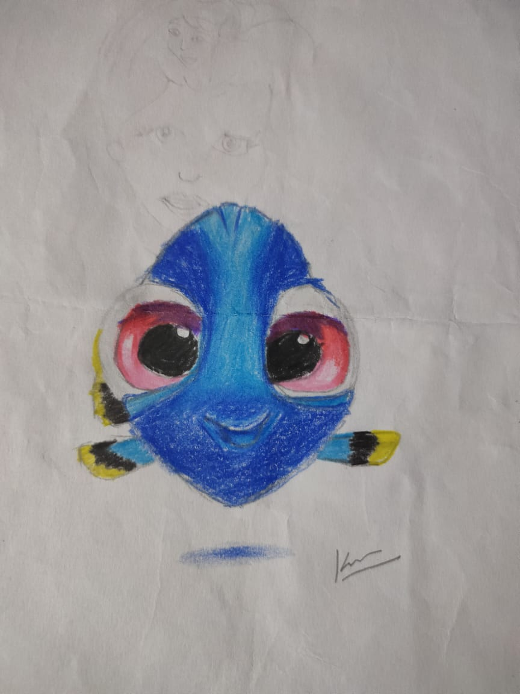

My Favorite Hobby
Drawing
My favorite hobby is Drawing. I mostly like to draw various sketches of different animals and birds. Now I am also learning to draw various water color paintings. I like to draw picture of animals as I am an animal lover. Drawing makes my mind calm and stress free. By drawing I also feel happy and very joyful. Whenever I get free time I sit don and start drawing a nice picture. I have drawn a lot of pictures and I am going to make a sketch book out of them at which I would in the future. Drawing is the best thing I like to do.
My Works


My Inspiration
I think everyone should have a nice hobby to do at free time. So that they would not always sit infront of the laptop or mobile phone playing games. It is also useful to freshen yor mind after studying and always keeps you stress free. You can do thing that you like and always be happy. So, as per my inspiration everyone must have a hobby which would help them keep calm and cool.